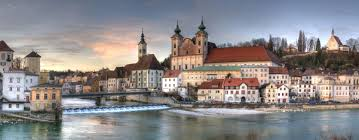
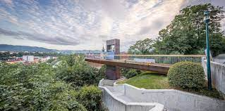
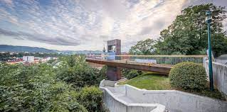

Steyr am Nationalpark – natürlich romantisch!
Steyr am Nationalpark, reich an Kultur, Industrie, Natur und Architektur ist eine lebens- und liebenswerte Kleinstadt.

 

In Steyr ist immer was los:
- Vom höchsten Turm in den tiefsten Keller
- Steyr erschweben
- Ein Eldorado für Naturliebhaber
- Advent in Steyr